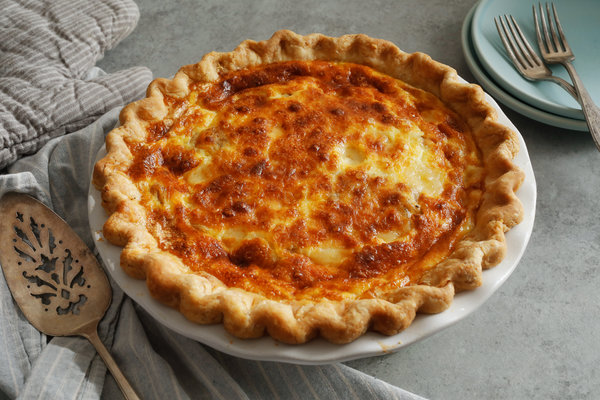

Quiche Lorraine

Description
Bacon, Swiss cheese and onions mingle in perfect harmony amidst the eggs and cream in this timeless classic. Perfect for breakfast, brunch, lunch, dinner or just an indulgent snack!
Ingredients
- 1 (9 inch) prepared pie crust
- 12 slices bacon
- 1 cup shredded Swiss cheese
- 1/3 cup minced onion
- 4 eggs, beaten
- 2 cups light cream
- 3/4 teaspoon salt
- 1/4 teaspoon white sugar
- 1/8 teaspoon cayenne pepper
Steps
- Preheat oven to 425 degrees F (220 degrees C).
- Place bacon in a large skillet, and fry over medium-high heat until crisp. Drain on paper towels, then chop coarsely. Sprinkle bacon, cheese and onion into pastry shell.
- In a medium bowl, whisk together eggs, cream, salt, sugar and cayenne pepper. Pour mixture into pastry shell.
- Bake 15 minutes in the preheated oven. Reduce heat to 300 degrees F (150 degrees C), and bake an additional 30 minutes, or until a knife inserted 1 inch from edge comes out clean. Allow quiche to sit 10 minutes before cutting into wedges.